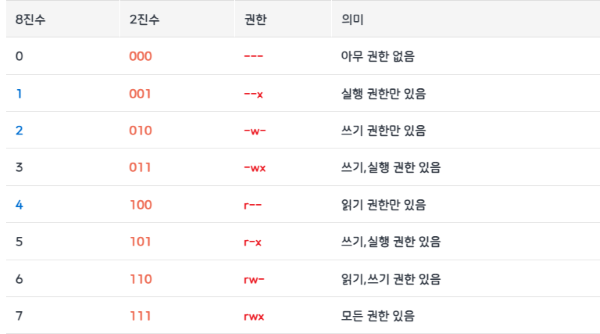

1024 미만 포트 허용하기
root 계정이 아닌경우 기본적으로 막혀있긴함
그래서 root로 실행하거나 이 방법 쓰거나
- sudo setcap ‘cap_net_bind_service=+ep’ [실행파일]
실행파일은 node 면 which node 위치
백그라운드
단순히 백그라운드 전환
만약 포그라운드에서 급작스럽게 백그라운드 작업을 돌려야 하는 경우
다만 이때는 로그를 보거나, 포그라운드 전환이 안됨
Ctrl+Z
작업 일시 정지
(이때 나오는 숫자가 작업 번호임)bg <작업번호>
작업 백그라운드 전환fg <백그라운드 번호>
포그라운드 전환
(다만 이전 로그는 못봄)- 스크립트 사용시
- <작업> &
screen
nohup에 경우에 백그라운드 실행시 다시 포그라운드 전환이 불가 하다
따라서 이 방법으로 하는 게 좋다
# 스크린 만들기
screen -S [스크린 이름]
# 같은 이름 스크린 있으면 접속하고 없으면 만들기
screen -R [스크린 이름]
# 스크린 목록출력
screen -ls (.뒤에 있는게 스크린 이름이다)
# 스크린 다시 진입
screen -x [스크린 이름]
# 스크린 종료 (백그라운드 종료)
# 또는 실행하고 있는 스크린에 진입 하여 exit
screen -X -S [스크린 이름] kill
# .sh 파일 같이 실행
screen [...옵션] ./test.sh (근데 홈부터 풀 경로로 줘야함)
# 쉘 스크립트랑 같이 실행
screen -S [스크린 이름] bash -c "스크립트"
# 백그라운드로 스크린 만들기
screen -dmS [스크린 이름]
# 로그 파일 남기
screen [...실행 옵션] -L -Logfile [파일]
# 이미 screen 만들어진 경우 로그
screen -S [스크린 이름] -X logfile [파일] && screen -X log윈도우 관리
약간 윈도우처럼 하나의 screen 에서 여러 창을 관리 할 수 있다
ctrl + a를 누른 다음 손을 떼고 다음 키를 누르는 식으로 사용한다.
Ctrl + A&W
윈도우 목록 확인 (하단에 윈도우 번호가 뜬다)Ctrl + A&C
새 윈도우 생성하기Ctrl + A&<윈도우 번호>
해당 윈도우로 전환Ctrl + A&Shift + S
가로로 윈도우 분활Ctrl + A&Shift + \
세로로 윈도우 분활 (이걸많이 쓸듯)Ctrl + A&Shift + X
현재 윈도우 종료Ctrl + A&Shift + Q
현재 윈도우만 남기고 종료Ctrl + A&A + Tab
윈도우가 분활된경우 윈도우 간 전환 (마우스가 사용불가함)
screen 내부 단축키
Ctrl+a, d
현재 스크린으로 부터 탈출 (이게 백그라운드 실행에 근간)
nohup
실행
백그라운드 실행
nohup [작업] &실시간 로그보기;
tail -f nohup.out
중지
실행중인 프로세스 목록 (첫번째 숫자 확인)- ps -ef
- ps auxf | grep [검색키워드]
- kill -9 [1 에서 나온 첫 숫자]
사용자 추가
여기 나온건
AWS인 것을 가정한 것
# 관리자 전환
sudo su
# 계정 생성
sudo adduser [유저이름]
# [유저이름] 홈 디렉토리에 .ssh 폴더 생성
sudo mkdir /home/[유저이름]/.ssh
# authorized_key 파일 복사
sudo cp /home/ubuntu/.ssh/authorized_keys /home/[유저이름]/.ssh
# 권한 변경
sudo chown -R new_user:new_user /home/new_user/.ssh
# sudo 그룹에 추가 하여 sudo 사용가능하게
sudo usermod -aG sudo [유저이름]비번 없이 루트 권한 사용하기
보안땜에 신중히 사용할것
- 관리자로 전환
sudo su - visudo
- 해당 파일 최하단에 반드시 해당구문 추가
[계정명] ALL=(ALL) NOPASSWD: ALL
비밀번호 로그인 활성화/비활성화 하기
authorized 키 파일로 로그인이 가능하니 비번 로그인은 가급적 끄는게 좋다
반대로 하면 활성화다
#PasswordAuthentication 를 no 로 바꾸고 저장
sudo vim /etc/ssh/sshd_config- 만약 그래도 적용이 안되는 경우
sshd_config.d폴더가 있는지 확인하고
해당 폴더에50-cloud-init.conf과 같은 설정파일이 또 있으면 거기서도 똑같이 수정- 아마 초기화용 백업본인거 같다
패키지 관리
초기셋팅:- sudo apt update
- apt list —upgradable
모든 패키지 업데이트:- sudo apt upgrade
패키지 이름 으로 패키지 검색- dpkg —list | grep <패키지 이름>
패키지 이름이 들어간 모든 패키지 삭제- sudo apt-get remove —purge <패키지 이름>
- 와일드카드
(*)사용가능
- 와일드카드
찌꺼기 파일 확인- sudo find / -name
"<패키지 이름>*"
- sudo find / -name
- sudo apt-get remove —purge <패키지 이름>
패키지 정보 확인- sudo apt show <패키지 이름>
- sudo apt-cache search <패키지 이름>
패키지에 폴더 정보 확인- dpkg -L [패키지 이름]
apt 저장소 위치- /etc/apt
- (keyring 관련 문제가 발생하면 해당 폴더를 뒤지자)
프로그램 메뉴얼 보기
- man <프로그램>
파이썬 관련
우분투에 파이썬은 커널과 매우 밀접한 관계를 가지므로 함부로 삭제하면 안됨!!!
파일 관리
-
폴더 조회:- ls <폴더>
-R: 하위까지 출력
- ls <폴더>
-
파일 생성:- touch <파일>
-
파일 삭제:- rm <폴더|파일명>
-rf: 폴더 삭제시
- rm <폴더|파일명>
-
파일 복사:- cp <대상> <위치>
-r: 디랙토리 복사
- rsync -av <복사할 폴더> <대상폴더>
--exclude [제외할 파일형식]: 파일 제외
- cp <대상> <위치>
-
파일 이동:폴더 쓰면 해당 폴더 안에 있는거 통째로
- mv <이동할 파일명> <이동할 위치>
-
폴더 생성:- mkdir <이름>
-r: 하위 폴더 까지 만들기
- mkdir <이름>
파일 권한
chmod <옵션 | null> <8진법, 기호> <파일>
파일 실행 권한 관리
기호로 권한 설정
1번째:u: 나,g: 그룹,o: 기타,a: 전부
2번째:+: 권한추가,-: 권한 재거,=: 권한지정
3번째:r: 읽기,w: 쓰기,x: 실행
# 파일에 실행권한 주기
# 따로 타겟을 지정 안하면 모든 사용자 권한 수정
chmod +x <파일이름>
# 그룹에 읽기, 쓰기 권한 부여
chmod g+rw <파일이름>
# 폴더 및 하위 파일/폴더 권한 부여
chmod -R a+rw <폴더이름>8진법으로 권한 설정

1번째: 내 권한2번째: 그룹 권한3번째: 다른 사용자 권한
| r | w | x |
|---|---|---|
| 4 | 2 | 1 |
# 나는 읽기, 쓰기 권한 부여
# 그룹은 읽기 권한만 부여
# 다른 사용자는 일기 권한만 부여
chmod 644 <파일이름>
# 폴더 및 하위 파일/폴더 권한 변경
chmod -R 644 <폴더이름>chown
파일 소유권 관리
- 특정 파일에 소유권이
u1한테 있다면 이걸 읽거나 수정할 수 있는건 오직root와u1뿐이다 - 다른 사용자가 그걸 수정 하거나 하려면
root권한을 얻거나
그 소유권을 가진 사용자가chmod로 다른 사용자에 대한 권한을 부여 해줘야 함
# 현재 폴더 내 파일들의 소유권 보기
ls -l
# 해당 파일의 소유권을 '소유자' 로 변경
chown <소유자> <파일>
# 해당 파일의 소유권을 '소유자' 로 변경 하고 그룹을 지정
chown <소유자>:<그룹> <파일>
# 해당 폴더 및 하위 디렉토리의 파일, 디렉토리 모두 '소유자' 로 변경
chown -R <소유자> <폴더>용량 확인
#파티션별 용량확인
df -h
#사용중인 모든 용량확인
df -P | grep -v ^Filesystem | awk '{sum += $3} END { print sum/1024/1024 " GB" }'
#남은 모든 용량 확인
df -P | grep -v ^Filesystem | awk '{sum += $4} END { print sum/1024/1024 " GB" }'
#해당 폴더 내 폴더들의 용량 확인
du -h --max-depth=1nano 단축키
참고자료
Ctal + K
줄 삭제Alt +U
실행 취소Alt +E
다시 실행
서비스 관리
서비스 종료
sudo systemctl stop [servicename]서비스 삭제
sudo systemctl disable [servicename]서비스 등록
sudo systemctl enable [servicename]서비스 재시작:
sudo systemctl restart [servicename]서비스 로그보기
sudo systemctl <서비스파일>.service
서비스 만들기
-
서비스 파일 만들기
# 파일생성 sudo nano /etc/systemd/system/<서비스명>.service -
내용작성 예
[Unit] Description=<서비스 설명> [Service] # 기본타입 Type=simple #재시작 여부 Restart=always ExecStart=<살행 스크립트 (절대 앞에 bash 붙이지 말것)> [Install] #부팅시 시작 WantedBy=multi-user.target -
서비스 등록
#서비스 리로드 sudo systemctl daemon-reload # 부팅시 실행에 등록 sudo systemctl enable <서비스파일.service> # 서비스 시작 sudo systemctl start <서비스파일.service>
사용자 관리
사용자
사용자 생성
sudo adduser [계정]사용자 삭제
sudo userdel -rf [계정]사용자 목록 확인
grep /bin/bash /etc/passwd | cut -f1 -d:사용자 이동
sudo su [계정]사용자 비번 변경:
sudo passwd [계정]
그룹
사용자 그룹 확인
cat /etc/group사용자를 보조 그룹에 추가
sudo usermod -aG <그룹명> <사용자 이름>사용자 기본 그룹 변경
sudo usermod -g <그룹명> <사용자 이름>사용자를 그룹에서 제외
sudo gpasswd -d <사용자 이름> <그룹명>그룹 생성
groupadd [그룹명]
IP 주소 확인
내부 IP 주소
hostname -I외부 IP 주소
curl icanhazip.com
환경변수 편집
사용자
- [편집기] ~/.bashrc
- source ~/.bashrc
- 수동으로 처리해야 하는 경우
export PATH=적용할꺼:$PATH이런식으로 추가
전역
- sudo [편집기] /etc/environment
- source /etc/environment
압축 / 해제
zip
중요한게 zip 으로 압축하면 리눅스에서 지정한 파일속성이 다 날라간다!!!
zip 없으면 설치
apt install zip
# 압축 해제
unzip <압축파일>.zip
# 폴더지정하여 풀기
unzip <압축파일>.zip -d <압축 푸는 위치>
# 폴더 압축
zip -r test.zip <폴더>tar
- 정확히는 tar 은 압축 파일이 아니라서 tar 만들고 gz로 압축하는
# tar.gz 압축 풀기
tar -zxvf <압축파일명>.tar.gz
# 지정된 경로로 풀기
tar -zxvf <압축파일명>.tar.gz -C <압축푸는 위치>
# tar.gz 압축
tar -zcvf <압축파일명>.tar.gz <파일1, 파일2 | 폴더>
# 현재 폴더의 모든걸 압축
tar -zcvf <압축파일명>.tar.gz *방화벽 (ufw)
리눅스 자체적으로 iptables 이라는 방화벽이 존재함
ufw는 이 iptables을 사용자가 쉽게 방화벽을 조작할 수 있도록 만든 frontend 프로그램임
따라서 iptables만 사용해도 되지만, 그냥 쉬우니까 ufw를 쓰도록 하자
복잡한 규칙 설정을 해야될 때만 iptables을 사용하자
-
기본 사용법
# ufw 상태 확인 (inactive: 비활성) sudo ufw status # iptables 정책으로 보기 sudo ufw show raw # ufw 활성화 sudo ufw enable # ufw 비활성화 sudo ufw disable # ufw 변경 사항 반영 sudo ufw reload # uft 로그 기록 (/var/log/ufw.log 에서 확인) sudo ufw logging on sudo ufw logging off # 룰셋 인덱스 숫자 보기 (삭제에 사용될 수 있음) sudo ufw status numbered # 인바운드 모든 트레픽 차단 **(기본으로 하고 가자)** sudo ufw default deny # 인바운드 모든 트레픽 허용 sudo ufw default allow -
포트로 규칙 관리
# 해당 포트번호에 tcp/udp 인바운드 허용 sudo ufw allow <포트 번호> # 해당 포트번호에 tcp 인바운드 허용 sudo ufw allow <포트 번호>/tcp # 포트 번호1 ~ 포트 번호2 범위에 tcp 인바운드 허용 sudo ufw allow <포트 번호1>:<포트 번호2>/tcp # 포트번호 인바운드 차단 sudo ufw deny <포트 번호> -
서비스로 규칙 관리
각 서비스별 관리되는 포트번호를
/etc/services에서 찾아 볼 수 있음
따라서 허용 해야할 포트번호를 알고 있다면 그냥 포트 번호를 허용해도 됨# mysql 에 기본 포트 (3306)에 인바운드 허용 sudo ufw allow mysql # mysql 에 기본 포트 (3306)에 인바운드 차단 sudo ufw deny mysql -
ip 규칙 관리
# 192.168.0.100 ip 인바운드 허용 sudo ufw allow from 192.168.0.100 # 192.168.0.0/24 cidr 범위 인바운드 허용 sudo ufw allow from 192.168.0.0/24 # 192.168.0.0/24 cidr 범위 인바운드 차단 sudo ufw allow deny 192.168.0.0/24 -
ip - 포트 조합
# 192.168.0.100에 22번 포트 인바운드 연결 허용 sudo ufw allow from 192.168.0.100 to any port 22 proto tcp -
ip 포워딩 관리
ip 을 위해 iptables 라우팅 설정 시 ufw를 활성화 했다면 여기서도 허용해야함
# 인바운드 NIC 로 오는 모든 패킷을 아웃 바운드 NIC로 보내는 것을 허용 ufw route allow in on <인바운드 NIC> out on <아웃 바운드 NIC>; -
규칙 삭제
sudo ufw delete <allow|deny> <포트번호|서비스|ip|numbered>
before.rules 설정
/etc/ufw/before.rules 를 수정함
-
icmp (ping) 패킷 거부 하기
아래 구문을 찾아서
ACCEPT로 되있는걸DROP으로 변경# ok icmp codes -A ufw-before-input -p icmp --icmp-type destination-unreachable -j DROP -A ufw-before-input -p icmp --icmp-type source-quench -j DROP -A ufw-before-input -p icmp --icmp-type time-exceeded -j DROP -A ufw-before-input -p icmp --icmp-type parameter-problem -j DROP -A ufw-before-input -p icmp --icmp-type echo-request -j DROP
SSH 인증키 발급
테스트는 안해봄
- PuTTYgen을 실행하여
Generate를 실행하여 키를 발급 PublicKey를 저장하고 아래처럼 수정- Before
---- BEGIN SSH2 PUBLIC KEY ---- Comment: "rsa-key-20240716" [키내용] ---- END SSH2 PUBLIC KEY ---- - After
ssh-rsa [키내용]
- Before
- 인증 접속하려는 사용자홈에
.ssh폴더 만들고authorized_keys파일 만들기mkdir .ssh cd .ssh [편집기] authorized_keys - authorized_keys에 위에 수정한
public key내용을 적고 저장 chmod 600 ./authorized_keys를 입력하여 나만 읽고 쓸 수 있게 끔만듬PrivateKey를 ppk 로 저장하여 putty에서 사용하면됨
백업 / 복원하기
tar 로 백업하기
- 특수 폴더들 제외하고 시스템 폴더를 포함한 모든걸 tar로 압축 하고
- 복원할때 기본 시스템은 클린 설치 하고 압축 풀어서 덮어쓰는 방식으로 이루어짐
# 백업 sudo tar -cvpzf /backup/backup.tar.gz \ --exclude=/backup \ --exclude=/proc \ --exclude=/sys \ --exclude=/mnt \ --exclude=/media \ --exclude=/run \ --exclude=/dev \ --exclude=/lost+found / # 복원 tar xvpfz <백업파일> -C
img 파일 만들어서 백업
USB 같은 외부 저장소가 있을때 사용가능
-
파티션 확인하기
seoksee@ubuntu:~$ sudo fdisk -lsudo fdisk -l #출력이 이렇게 나오는데 # mmcblk0 이라는 이름의 디스크에 p1, p2 라는 두개의 파티션이 존재한다는 것 === /dev/mmcblk0p1 * 2048 1050623 1048576 512M c W95 FAT32 (LBA) /dev/mmcblk0p2 1050624 125173726 124123103 59.2G 83 Linux === -
img 파일 만들기
# 파티션을 제외한 장치명 mmcblk0만 입력 sudo dd if=/dev/mmcblk0 of=<외부장치> stutus=progress -
복원은 따로 이미지를 굽거나 하면 됨
스케줄링 사용 (crontab)
주기적으로 시간에 따라 스크립트를 실행하는
구성하는법
- 먼저 root 계정으로 이동한다
sudo su- sudo 권한 필요한 프로그램 대처하기 위해 root에 crontab 을 수정하는거
- 구성을 편집한다
crontab을 재시작 한다service cron restart
구성편집
구성설명
#입력
crontab -e
# 맨 끝에 추가
===
* * * * * <실행명령>
===- 1번
*: 분 (0~59) - 2번
*: 시 (0~33) - 3번
*: 일 (1~31) - 4번
*: 월 (1~12) - 5번
*: 요일 (0~7)
스케줄링 로그보기
grep CRON /var/log/syslog추가 명령
구성을 본다
crontab -l모든 구성을 삭제한다
crontab -r
패킷 캡쳐
NIC ID는 ifconfig 에서 확인가능
# 실시간 패킷 보기
sudo tcpdump -i <NIC ID>
# `Wireshark` 캡쳐 파일로 저장
sudo tcpdump -i <NIC ID> -w <저장파일명>.pcap
# 시간지정
sudo tcpdump -i <NIC ID> -w <저장파일명>.pcap -G 60이 방법 말고도 서버 내부 다른 네트워크를 캡쳐 하고싶은 경우 (예를들어 VPN 서버 패킷) Wireshark 에 ssh remote capture 기능을 이용해 볼 수 있음
SSH 접속로그 & 임의 접속 차단
참고자료
-
접속로그 확인
# 명령어 전체 로그로 확인 sudo cat /var/log/auth.log | grep sshd # 오늘자 로그확인 last -f /var/log/btmp # 로그인 성공 last -f /var/log/wtmp # 로그인 실패 -
fail2ban 구성
[sshd] enabled = true # 포트번호 port = 12734 filter = sshd logpath = /var/log/auth.log # 시도횟수 maxretry = 3 # 차단시간 (1시간) bantime = 3600 # 시도횟수 계산 시간 (10분) findtime = 600 -
fail2ban 관련 명령어
# 구성 상태 확인 sudo fail2ban-client status # 로그 확인 sudo cat /var/log/fail2ban.log # ssh에 차단 상태 확인 sudo fail2ban-client status sshd # ssh 특정 ip 주소 수동으로 차단 sudo fail2ban-client set sshd banip <IP주소> # ssh 특정 ip 주소 차단 해제 sudo fail2ban-client set sshd unbanip <IP주소>
침입 탐지 방법
Auditd 프로그램을 사용할 수 있지만
가장 쉽게는 auth.log 로그 확인 하는 방법도 있음
물론 실력있는 해커들이면 앵간해선 다 삭제하긴 함
Dynamic port forwarding (DPF) 설정하기
SSH를 프록시 서버 로 연결하는
SSH 설정
- SSH 포트포워딩 허용하기
sudo nano /etc/ssh/sshd_config - 이렇게 수정
AllowAgentForwarding yes AllowTcpForwarding yes GatewayPorts yes - 해당 구문을 통해 적용
sudo systemctl restart ssh
DPF 로 SSH 접속하기
- PowerShell 애서
ssh -D [매핑포트] -f -C -N -i [pem 인증키] [사용자]@[호스트]- 이후 커넥션을 계속 유지시킨다
- Putty 에서
- Connection → SSH → Tunnels 로 이동
Sorce port에 매핑시킬 포트입력Destination아래 있는 라디오 버튼을Dynamic으로 설정- 이후 Open을 눌러 SSH 서버에 접속
- 이후 커넥션을 계속 유지시킨다
SOCKS 프록시로 연결
- 윈도우 설정 → 네트워크 및 이더넷 → 프록시
- 수동 프록시 설정 에서 프록시 서버 허용
주소항목에 이렇게 입력socks=127.0.0.1포트항목에매핑포트를입력로컬(인트라넷)뭐시기 체크 하고 저장
환경변수 내 중복되는 프로그램 선택
update-alternatives --config <프로그램>가령 JAVA를 여러버전을 깔았고, 모두 환경변수에 추가할경우 java 명령을 치면 중복으로 인해 설치된 것 중 하나만 선택될텐데 이걸바꿀수 있음
그 외
작업 관리자:
htoproot 비번 변경:
sudo passwd root시간 설정하기:
sudo timedatectl set-timezone Asia/Seoul패키지 위치확인:
which [패키지]기본 텍스트 에디터 변경
update-alternatives —config editor- 원하는 번호 입력
내가 입력한 모든 명령어보기:
history긴 파일 읽기 (종료하려면 q 입력):
less <파일>
<대충 뭔가 출력되는 명령> | less문자열 찾기
grep열린 포트 확인:
netstat -tnlp명령결과를 파일로 저장과 동시에 stdout으로 출력:
<명령어> | tee <저장파일명>시스템 로그 확인:
sudo cat /var/log/auth.log
wget
파일명 지정하여 다운로드:- wget <옵션 | null> < URL > -O [파일명]
- 옵션
--content-disposition: 원본 파일명 유지-P <경로>: 경로 지정하여 다운로드
curl <옵션> < URL >
파일 다운로드 옵션:-o <파일명>: 파일명 지정-O: 저장 시 원격에 있는 이름 가져오기-J: 원본 파일명 유지content-disposition해더를 읽어옴
--output-dir <경로>: 경로지정--location: 리디이렉트 사용
하드디스크 메모리 스왑 설정
AWS 프리티어에 경우 메모리 부족으로 끊기는 것들이 많은데 이걸 메모리 스왑으로 해결
# 메모리 스왑 2GB 정도로 설정
sudo dd if=/dev/zero of=/swapfile bs=128M count=16
sudo chmod 600 /swapfile
sudo mkswap /swapfile
sudo swapon /swapfile
# 성공적으로 됬는지 확인
sudo swapon -s
sudo [편집기] /etc/fstab
# 해당 파일 맨끝에 추가
/swapfile swap swap defaults 0 0
#적용 확인 (shared 부분)
free
#재부팅 해주면 좋음hostname 변경 (<사용자>@<호스트이름>:~$)
# 원하는 이름으로 변경
sudo nano /etc/hostname
===재부팅===윈도우에서 리눅스 시스템 파일 보는법
리눅스는 ext4 파일 시스템을 쓴다
WSL로 마운트 하거나- Linux File Systems for Windows 로 마운트